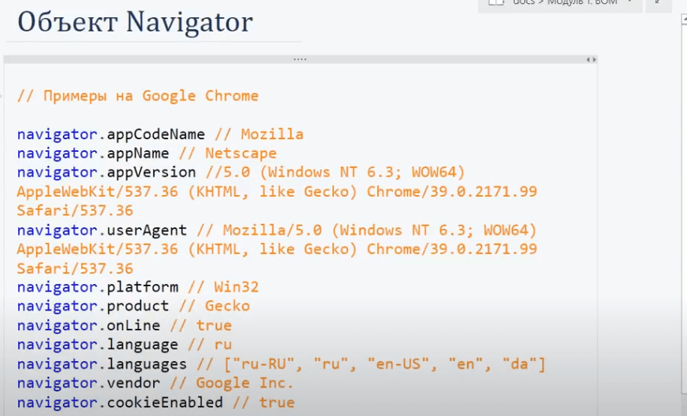
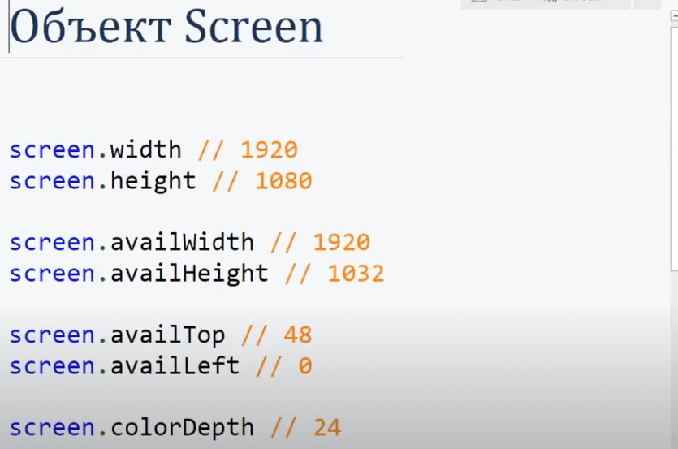
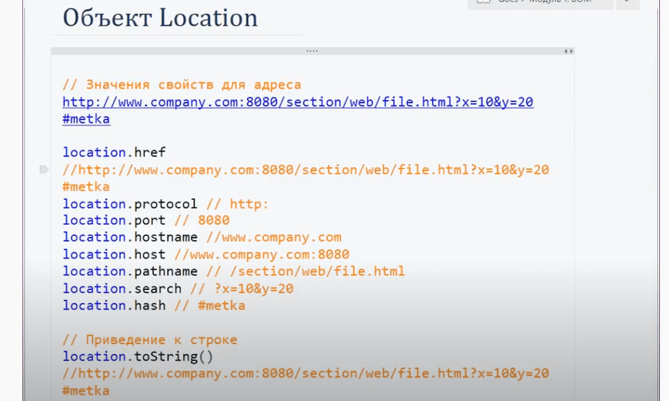

<div class="wrap">
    <h2 class="header-style">Шпаргалка по BOM(рассказывал он это в 2016 году, может уже что то добавилось или изменилось)</h2>
    
    
    <h3 class="header-style2">Объект браузера navigator(редкий)</h3>
    <p>Этот объект даёт инфу о браузере пользователя.</p>
    
    
    
    <h3 class="header-style2">Объект браузера screen(по чаще используется)</h3>
    
    
    <h3 class="header-style2">Объект браузера location(по чаще используется)</h3>
    
   
</div>
